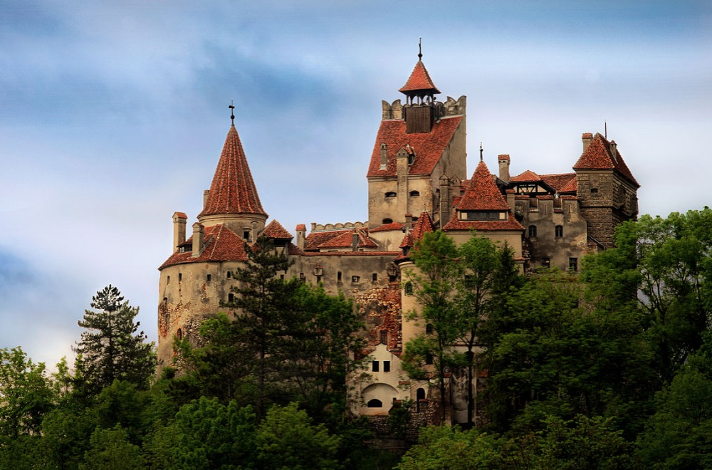
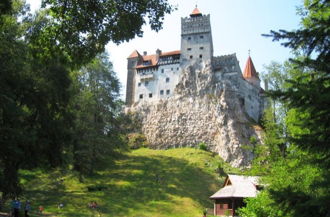
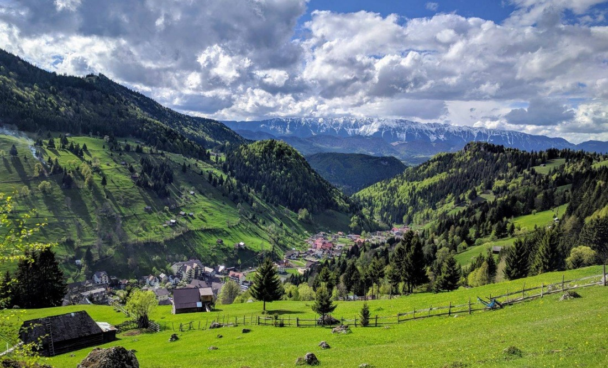
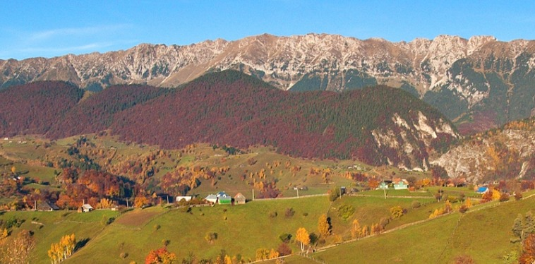
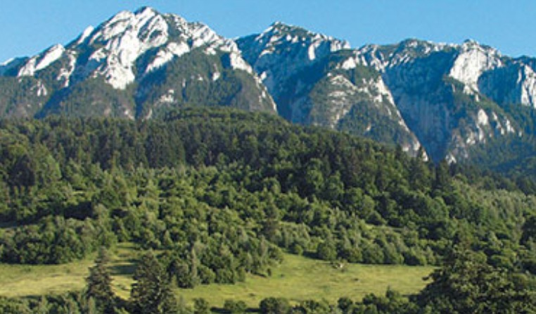
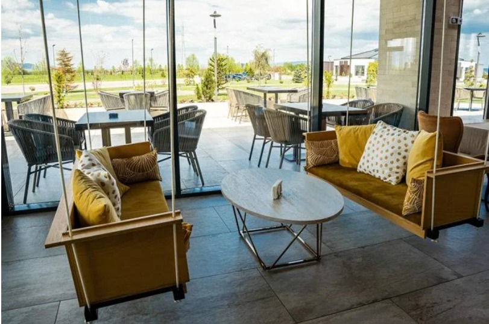
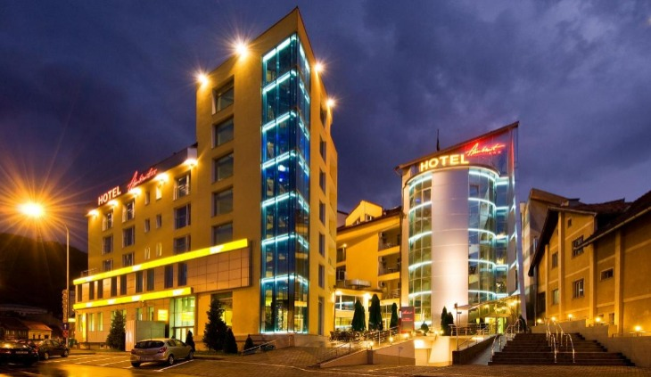
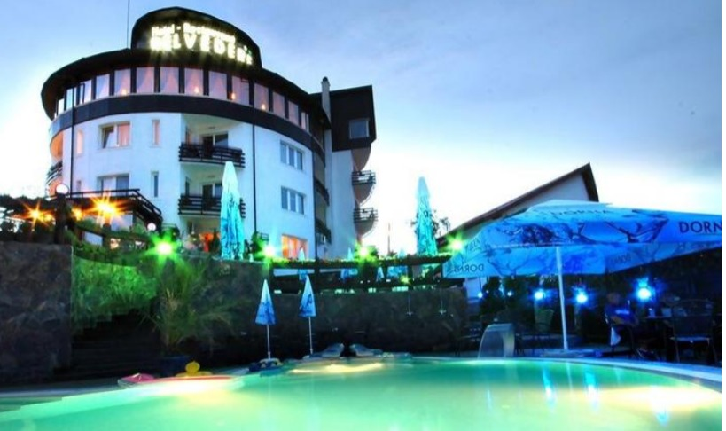
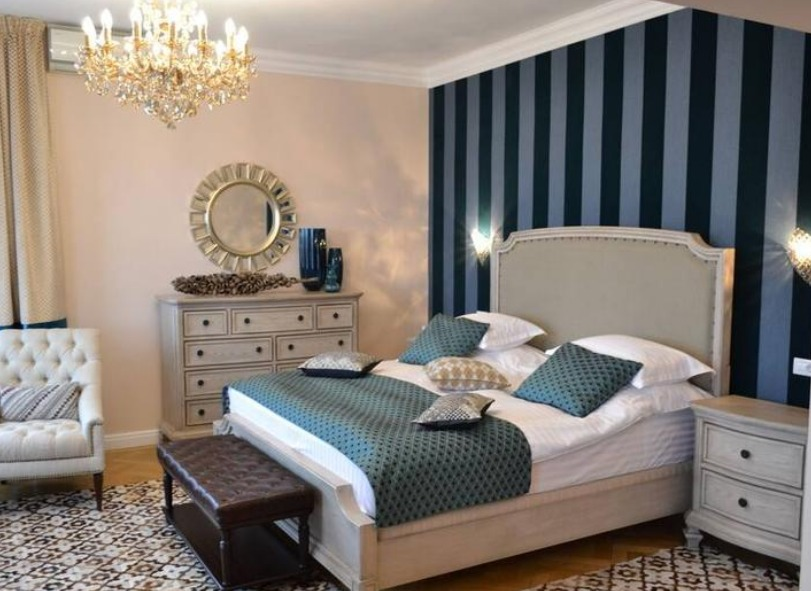

. A worldwide known place .
TRANSYLVANIA!
Why to choose Brasov ?
Brasov is a charming city located in the heart of Romania's Transylvania region. Known for its medieval architecture, stunning natural scenery, and rich history, Brasov is a must-visit destination for travelers. One of the top attractions in Brasov is the city's historic Old Town, which is home to picturesque cobblestone streets, colorful buildings, and plenty of cafes, shops, and restaurants. Visitors can also explore the iconic Black Church, a Gothic-style cathedral built in the 14th century. For nature enthusiasts, Brasov is surrounded by the Carpathian Mountains, offering ample opportunities for hiking, skiing, and outdoor adventures. Visitors can take a cable car up to the top of Mount Tampa for panoramic views of the city and the surrounding landscape. Other popular attractions in Brasov include the Brasov Citadel, the Brasov Museum of Ethnography, and the beautiful St. Nicholas Church. Visitors can also take day trips to nearby attractions like the fortified city of Sighisoara or Bran Castle, the legendary "Dracula's Castle." Overall, Brasov is a wonderful destination for history buffs, nature lovers, and anyone looking to experience the unique culture of Transylvania.
Local Attractions
BRAN CASTLE
Bran Castle, also known as Dracula's Castle, is located in the small town of Bran, just outside the city of Brasov in Romania. It is one of the most popular tourist destinations in the country, and for good reason! The castle has a long and fascinating history, dating all the way back to medieval times. Originally built as a fortress to protect against invading armies, Bran Castle has since been used for a variety of purposes, including as a royal residence, a hospital, and even a museum. Today, visitors can explore the castle's many rooms and chambers, learn about its history, and enjoy stunning views of the surrounding countryside. Whether you're a history buff, a fan of Gothic architecture, or just looking for a fun and interesting day trip from Brasov, Bran Castle is definitely worth a visit!
MOECIU DE SUS
Right next to Bran Castle, you almost do not feel when leaving Bran and enter Moeciu. Totally opposite to Bran, Moeciu is a dream village, with large valleys and wonderful hills, the astonishing mountains behind them. You may forget being in a real world, this place is really a fairly tale land. Moeciu de Sus is a charming mountain village located in the heart of Romania, surrounded by breathtaking scenery and endless natural beauty. With its rolling hills, dense forests, and crystal-clear streams, this idyllic destination is perfect for nature lovers and outdoor enthusiasts alike.
Visitors to Moeciu de Sus can enjoy a wide range of activities, from hiking and mountain biking to fishing and horseback riding. The village is also home to several traditional guesthouses and restaurants, where travelers can experience the warm hospitality and delicious cuisine of the local people. But perhaps the most enchanting thing about Moeciu de Sus is its timeless atmosphere and sense of peace and tranquility. Here, time seems to slow down, allowing visitors to relax, unwind, and reconnect with nature in a way that is all too rare in our modern world. Whether you're looking for adventure, relaxation, or simply a break from the hustle and bustle of daily life, Moeciu de Sus is the perfect destination for your next Romanian getaway.
ZARNESTI
Do not hurry to leave before visiting Zarnesti. Famous for its canion, Zarnesti is probably one of the wildest place, a break from the daily routine, a breathe of fresh air. 'Prapastiile Zarnastilor' rezerves for you breath-taking landscapes, a path between the mountains.A charming town, surrounded by breathtaking mountains and beautiful forests. It is a popular destination for tourists who come to explore the Piatra Craiului National Park, which is home to a diverse range of flora and fauna. In Zarnesti, you can visit the impressive Bran Castle, commonly known as Dracula's Castle, which is only a short drive away. The town also has a rich history, and you can visit the Zarnesti Museum to learn more about it. If you are interested in outdoor activities, you will be spoilt for choice in Zarnesti. You can go hiking, rock climbing, cycling, or even bear watching.
Restaurants
Brasov is known for its rich culinary tradition. The food here is a blend of different flavors and cultures, which makes it a perfect destination for food enthusiasts. One of the most popular dishes in Brasov is the "sarmale," which are stuffed cabbage rolls. They are typically filled with minced meat, rice, and vegetables and are usually served with sour cream and polenta. Another popular dish is the "mici," a type of grilled sausage made with a mix of beef, lamb, and pork, served with mustard and bread. If you are in the mood for something sweet, you can try the traditional Romanian dessert "papanasi." These are fried dough balls that are served with sour cream and jam. Brasov also has a wide variety of international cuisine options, including Italian, French, and Turkish. Overall, Brasov's food scene is diverse and delicious, and there's something for everyone to enjoy.
NEXT DOOR
Next Door is a must-visit restaurant for any tourist in the area. Located in the heart of the city, this spot is known for its delicious food and friendly staff. Whether you're looking for a quick bite or a leisurely meal, Next Door has something to offer. The menu features a variety of dishes inspired by both local and international cuisine. From classic burgers to exotic seafood, there is something for everyone.
In addition, he prices are very reasonable, making it a great choice for tourists on a budget. The restaurant has a relaxed and welcoming vibe, making it a great place to unwind after a long day of sightseeing. And the staff are always happy to offer recommendations or just chat with customers.If you're looking for a tasty meal and a great dining experience in the area, make sure to check out Next Door restaurant. You won't be disappointed!
BARRIQUE GARDEN

Placed in the heart of Brasov, Barrique Garden offers a special experience as you step inside.A large and variated menu is waiting for you, so you can enjoy the special taste of food before to continue your journey in Brasov. Multiple dishes options to meet the hightest expectations, having as well a great wine selection, with a variety of both local and international wines available. Whether you're a wine connoisseur or just looking for a tasty glass to accompany your meal, Barrique has got you covered.
GRACE RESTAURANT
Grace is a top-rated restaurant that should be on every tourist's list when visiting the area. Located in a trendy neighborhood, the restaurant boasts a chic atmosphere with elegant decor that creates a warm and inviting ambiance. The menu is a fusion of modern American cuisine with an emphasis on fresh, seasonal ingredients. Each dish is masterfully prepared, and the flavors are expertly paired to delight even the most discerning palate. From the appetizers to the desserts, the food at Grace is exceptional. However, the experience at Grace is not just about the food. The restaurant is known for its exceptional service, with staff that are highly knowledgeable about the menu and wine list, and for the welcoming and relaxed atmosphere.
They are attentive, friendly, and go the extra mile to ensure that every guest feels welcome and comfortable.
Hotels
ARO HOTEL
Located in the heart of the beautiful city of Brasov, Aro Hotel is a fantastic choice for travelers looking for comfort and convenience. The hotel boasts a central location that is within walking distance to many of the city's main attractions, including the Black Church, the Council Square, and the Rope Street. Guests at Aro Hotel will find a range of accommodations to suit their needs. The hotel offers standard single and double rooms, as well as executive rooms and suites with stunning views of the city. All rooms are comfortably furnished and come equipped with modern amenities, including air conditioning, flat-screen TVs, and free Wi-Fi. In addition to its comfortable accommodations, Aro Hotel also offers a range of facilities and services to make your stay even more enjoyable. Guests can unwind in the hotel's sauna and fitness center, take a dip in the indoor pool, or enjoy a delicious meal at the on-site restaurant. Whether you're traveling for business or leisure, Aro Hotel Brasov is an excellent choice for your next visit to this charming city.

AMBIENT HOTEL
Ambient Hotel Brasov is a cozy and modern hotel located in the heart of Brasov, Romania. The hotel features 71 spacious and comfortable rooms, each equipped with modern amenities such as air conditioning, free Wi-Fi, flat-screen TVs, and comfortable beds. The rooms are decorated in a minimalist yet elegant style, providing a peaceful and relaxing atmosphere for guests to enjoy. The hotel also features a restaurant which serves delicious and diverse cuisine, as well as a bar where guests can unwind with a cocktail or a glass of wine. Other amenities include a fitness center and a spa, where guests can indulge in various treatments and therapies to rejuvenate their bodies and minds. Guests of Ambient Hotel Brasov will appreciate the hotel's convenient location, which is close to many attractions, including the Black Church, the Council Square, and the Tampa Mountain. The hotel's friendly and attentive staff are always available to assist guests with any needs or requests, ensuring a comfortable and enjoyable stay.
BELVEDERE HOTEL
The Hotel Belvedere Brasov is a charming and elegant mountain hotel situated in the heart of the picturesque city of Brasov, Romania. This four-star hotel offers modern amenities and comfortable accommodations, while still maintaining its traditional and historical charm. The hotel has 30 spacious and well-appointed rooms, each with beautiful mountain views, European-style beds, and free Wi-Fi.
Guests can also enjoy a range of amenities including a spa, sauna, fitness center, and indoor pool. The hotel's location is perfect for exploring the city, with many attractions within walking distance. Guests can visit the famous Black Church, explore the medieval streets and architecture, or take a hike in the nearby mountains. The hotel also boasts a restaurant serving a variety of delicious Romanian and international dishes, as well as a cozy bar and lounge area. With its welcoming atmosphere, beautiful surroundings, and top-notch amenities, the Hotel Belvedere Brasov is an ideal destination for travelers seeking comfort, tranquility, and adventure.
CASA GRANTA HOTEL
Casa Granta Hotel Brasov is a charming boutique hotel located in the heart of the historic city of Brasov, Romania. The hotel is housed in a beautifully restored 17th century building, which blends traditional architecture with modern amenities. With only 10 rooms, Casa Granta offers a cozy and intimate atmosphere, perfect for those seeking a peaceful and relaxing stay. Each room at Casa Granta is uniquely decorated with elements that showcase the local culture and history of the region. Guests can enjoy luxurious bedding, comfortable seating areas, and modern amenities such as free Wi-Fi, flat-screen TVs, and minibars. Some rooms also feature balconies with stunning views of the city and the surrounding mountains. Casa Granta Hotel Brasov offers a range of services to ensure that guests have a comfortable and enjoyable stay. The hotel has a restaurant that serves delicious local and international cuisine, as well as a bar where guests can enjoy a drink or snack. There is also a spa center where guests can relax and unwind with a variety of treatments and massages.
Casa Granta Hotel Brasov is the perfect base for exploring the beautiful city of Brasov and the surrounding area
HERE IS HOW TO REACH BRASOV
Surrounded by the Carpathian Mountains, Brasov remains one of the most amazing places from Romania.No matter which mode of transportation you choose, reaching Brasov is easy and convenient, and you're sure to be rewarded with beautiful scenery and a warm welcome when you arrive. Here are some ways to reach Brasov for tourists:
By bus: Brasov is also well-connected to other major cities in Romania by bus. There are several bus companies that run daily services to and from Brasov, making it a convenient option for travelers
By plane: The nearest airport to Brasov is the Henri Coanda
International Airport in Bucharest. Once you arrive in Bucharest,
you can take a bus, train, or rent a car to reach Brasov.
By train: Brasov has a train station that connects the city to other
major cities in Romania, such as Bucharest, Cluj-Napoca, and Sibiu.
The trains are usually modern and comfortable, and the scenery along
the way is breathtaking.
By car: If you prefer to drive, you can also rent a car and drive to Brasov. The roads in Romania are well-maintained, and the drive to Brasov is a beautiful one, with stunning views of the Carpathian Mountains.